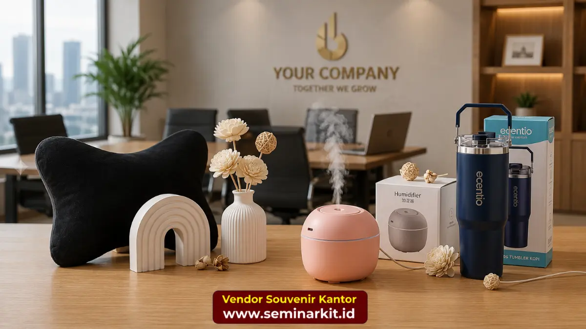

Souvenir kantor custom logo adalah merchandise korporat yang dicetak khusus dengan logo dan identitas visual perusahaan menggunakan teknik cetak seperti sablon, bordir, emboss, atau laser engraving.
Produk ini digunakan perusahaan untuk memastikan setiap souvenir yang dibagikan konsisten dengan brand guideline dan mudah dikenali sebagai representasi merek.
Konsistensi visual pada souvenir custom logo berperan penting dalam membangun brand recall jangka panjang.
- Souvenir custom logo dicetak menggunakan berbagai teknik sesuai jenis bahan produk.
- Konsistensi warna dan proporsi logo menjadi faktor utama kualitas hasil cetak.
- Pemilihan teknik cetak yang tepat memengaruhi daya tahan logo pada produk.
- Souvenir custom logo membantu memperkuat identitas visual perusahaan secara konsisten.
Apa Itu Souvenir Kantor Custom Logo?
Souvenir kantor custom logo merujuk pada produk merchandise yang dirancang khusus untuk menampilkan logo, nama, atau tagline perusahaan pada permukaan produk melalui proses cetak tertentu.
Berbeda dengan souvenir generik, souvenir custom logo dibuat dengan mempertimbangkan brand guideline perusahaan, termasuk kombinasi warna, tipografi, dan proporsi logo agar tampil konsisten di berbagai jenis produk.
Proses pembuatan souvenir custom logo umumnya dimulai dari penyesuaian file desain logo ke format yang sesuai dengan teknik cetak yang dipilih, dilanjutkan dengan pembuatan mockup digital untuk persetujuan, dan diakhiri dengan produksi sampel sebelum masuk ke tahap produksi massal.
Teknik Cetak Logo Apa Saja yang Tersedia untuk Souvenir Kantor?
Terdapat beberapa teknik cetak logo yang umum digunakan pada souvenir kantor, yaitu sablon, bordir, emboss, dan laser engraving, yang masing-masing memiliki karakteristik dan kecocokan bahan berbeda.
Pemilihan teknik cetak yang tepat akan memengaruhi tampilan akhir sekaligus daya tahan logo pada produk.
Sablon
Sablon merupakan teknik cetak yang paling umum digunakan pada produk berbahan kain atau plastik, seperti tote bag dan tumbler plastik.
Teknik ini cocok untuk desain logo dengan warna solid dan biaya produksi yang relatif terjangkau untuk pesanan dalam jumlah besar.
Bordir
Bordir umumnya digunakan pada produk tekstil seperti topi, polo shirt, atau tas kanvas premium.
Teknik ini menghasilkan tampilan logo yang timbul dan lebih tahan lama dibandingkan sablon, meskipun umumnya membutuhkan biaya produksi yang sedikit lebih tinggi.

Emboss
Emboss adalah teknik cetak dengan cara menekan permukaan bahan, umumnya digunakan pada produk berbahan kulit seperti tempat kartu nama atau buku agenda.
Teknik ini menghasilkan kesan logo yang elegan dan minimalis tanpa penggunaan tinta warna.
Laser Engraving
Laser engraving merupakan teknik cetak dengan sinar laser untuk mengukir logo pada permukaan logam atau kayu, seperti pada tumbler stainless atau plakat penghargaan.
Teknik ini menghasilkan hasil cetak yang sangat presisi dan tahan lama, cocok untuk souvenir kategori premium.
Mengapa Konsistensi Logo Penting dalam Souvenir Korporat?
Konsistensi logo pada souvenir korporat penting karena setiap produk yang dibagikan berfungsi sebagai representasi visual perusahaan di berbagai lingkungan, mulai dari meja kerja klien hingga acara publik.
Ketidakkonsistenan warna atau proporsi logo pada souvenir dapat menimbulkan kesan kurang profesional dan membingungkan penerima terkait identitas merek yang sebenarnya.
Untuk menjaga konsistensi ini, perusahaan umumnya perlu menyediakan brand guideline yang jelas kepada vendor produksi, mencakup kode warna, ukuran minimum logo, dan area larangan (clear space) di sekitar logo agar tidak tertutup elemen desain lain.
Bekerja sama dengan vendor yang memahami kebutuhan brand guideline perusahaan dapat membantu menjaga konsistensi ini di setiap jenis produk souvenir yang dipesan.
Tim kami di vendorsouvenirkantor.web.id menyediakan layanan konsultasi desain untuk memastikan hasil cetak logo sesuai dengan identitas visual perusahaan Anda.
Bagaimana Memilih Teknik Cetak yang Tepat untuk Souvenir Kantor?
Pemilihan teknik cetak logo sebaiknya disesuaikan dengan jenis bahan produk, anggaran, dan tujuan penggunaan souvenir.
Produk berbahan logam atau kayu umumnya lebih cocok menggunakan laser engraving untuk hasil yang presisi dan tahan lama, sementara produk tekstil lebih sesuai menggunakan bordir atau sablon tergantung kompleksitas desain logo.
Anggaran produksi juga menjadi pertimbangan penting, karena teknik cetak seperti emboss dan laser engraving umumnya membutuhkan biaya tambahan dibandingkan sablon standar.
Namun, hasil yang lebih tahan lama pada teknik-teknik tersebut dapat menjadi nilai tambah untuk souvenir kategori premium yang ditujukan kepada mitra bisnis penting.
Untuk mendapatkan rekomendasi teknik cetak yang paling sesuai dengan kebutuhan dan anggaran perusahaan Anda, konsultasikan langsung kebutuhan souvenir custom logo Anda bersama tim kami di vendorsouvenirkantor.web.id.
Souvenir kantor custom logo merupakan alat branding yang efektif apabila diproduksi dengan teknik cetak yang tepat dan konsistensi visual yang terjaga.
Memahami karakteristik setiap teknik cetak, mulai dari sablon hingga laser engraving, membantu perusahaan menentukan pilihan yang paling sesuai dengan jenis produk dan anggaran yang tersedia.
Wujudkan souvenir kantor custom logo dengan hasil cetak presisi dan bahan berkualitas bersama tim kami di vendorsouvenirkantor.web.id mulai hari ini.

Banner promosi: klik gambar untuk langsung terhubung ke WhatsApp tim sales.